Cookbook
蒜香虾仁技术总结（源自美食作家王刚）
- 鲜虾500g冰箱急冻40分钟
- 方便前段剥壳，挤出虾尾，防止壳肉粘连；
- 挑出虾线去除杂质；
- 放入盆中清洗，清洗之后将其横刀切成两片备用；
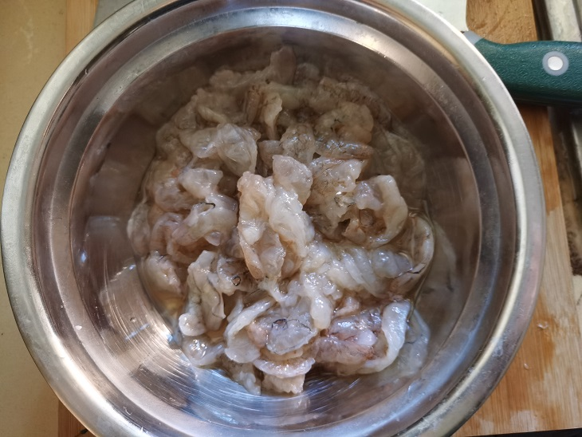
- 开始腌制
- 适量料酒（约3克）；
- 适量生抽酱油（约3克）；
- 食用盐半勺；
- 少许胡椒粉；
- 适量的白糖搅拌均匀；
- 加入处理好的虾仁搅拌均匀，中途加入适量的玉米淀粉拌匀腌制五分钟；
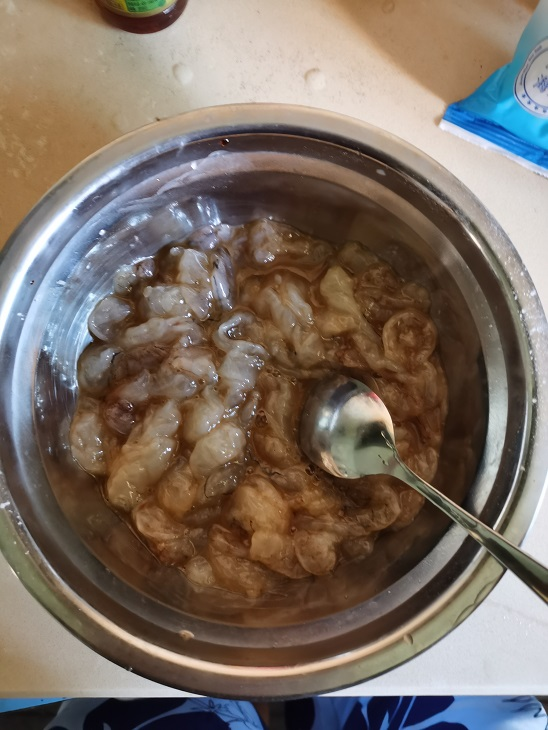
- 准备辅料
- 大蒜100克拍散剁碎备用，最好能剁碎一些；
- 准备蒜苗1根，取下蒜叶之后切碎备用；
- 二荆条和小米辣切碎备用；
- 开始制作
- 在锅中加入适量的清水，然后加入蒜蓉焯水，将其烧开后再捞出，目的是煮熟和去除蒜蓉里面的淀粉，防止炸糊；
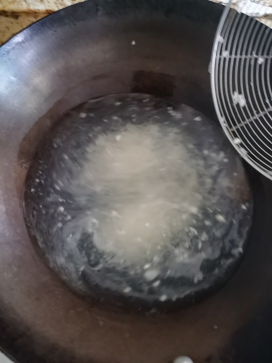 - 加入适量的油烧热，加入淀粉炸香炸黄，淡黄色即可捞出；
- 留下少许炸蒜蓉的油烧热，然后将腌制好的虾仁下锅煎熟，中途翻面；
- 煎熟之后加入料头和蒜蓉翻炒均匀；
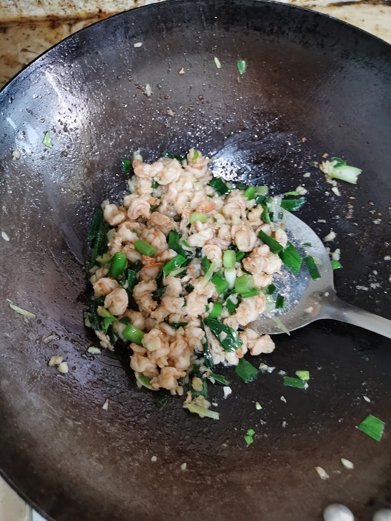
- 出锅装盘
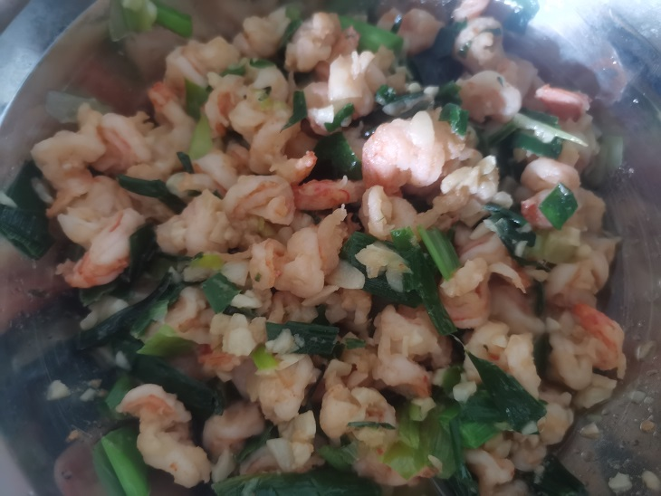
水煮肉片技术总结（改编自美食作家王刚）
此篇记录省略了“刀口辣椒”的制作。
- 准备猪肉并腌制
- 猪里脊肉300克，切成2mm薄片放入碗中清洗两遍，去除肉片中的血水和杂质；
- 碗中加入食用盐一勺，加入胡椒粉一克，加入生抽酱油5克，加入料酒3克朝着一个方向搅拌两分钟；
- 调鸡蛋糊，碗中加入鸡蛋清一个，加入三勺土豆淀粉，搅拌均匀；
- 鸡蛋糊和肉片一起搅拌均匀，形成锁水的润滑膜；
- 加入植物油拌匀备用；
- 准备辅料
- 准备油麦菜一颗，切三段备用；
- 准备芹菜几根，切成小段备用；
- 准备蒜苗两根轻轻拍散，切成小段备用；
- 准备大蒜20克，切碎备用，准备生姜切片备用；
-
准备刀口辣椒（省略，直接用老干妈代替）
-
开始制作
- 加入适量的底油，油温6成热后加入配菜爆炒20秒，炒至断生；
- 再次加入适量的底油，油温6成热后加入辅料和老干妈，开大火爆炒料头爆香；
- 然后加入清水烧开，将腌制好的肉片下锅，烫熟之后捞出摆盘；
- 肉片和配菜装盘后加入适量的原汤；
葱香牛肉技术总结（源自美食作家王刚）
- 主料
- 外脊牛肉（350克）
- 切成8mm薄片，横竖敲打备用；
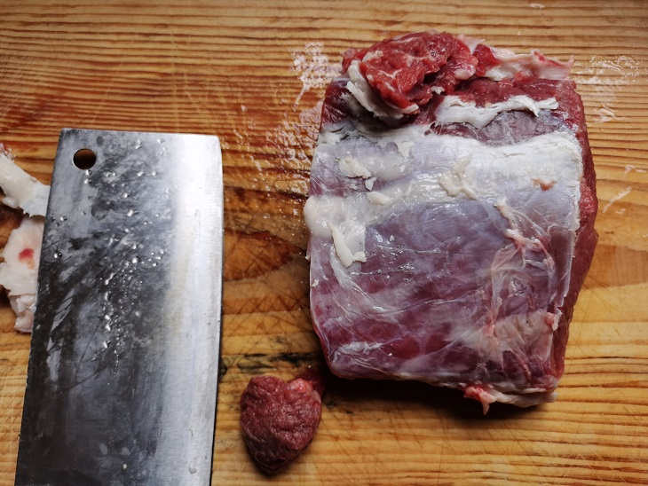
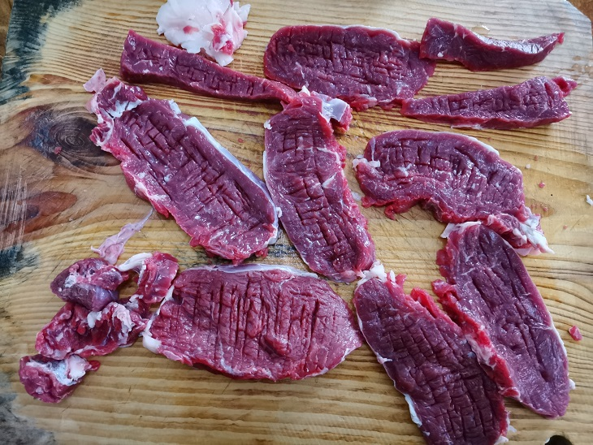 - 清洗去除血水；
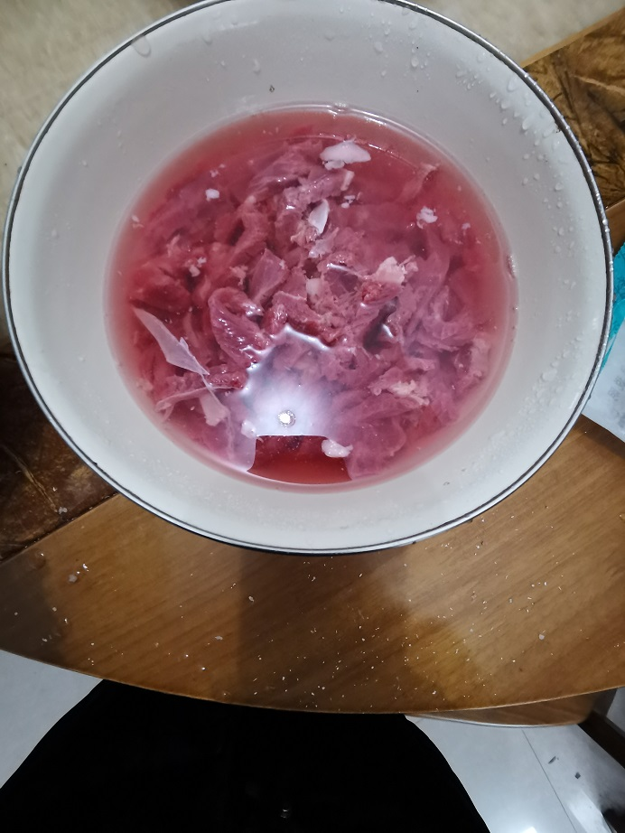
- 切成8mm薄片，横竖敲打备用；
- 辅料
- 玉米淀粉（约2克）
- 土豆淀粉（15克）
- 植物油（适量）
- 大葱（120克）
- 大红椒（1个）
- 生姜（25克）
- 大蒜（几颗）
- 水淀粉（适量）
- 调味料
-
蚝油（适量）
-
生抽酱油（适量）
-
食用盐（少许）
-
老抽（适量）
- 腌制牛肉，耗油三克，生成酱油三克，食用盐1.5克，老抽三克，清水15克；

- 腌制牛肉，耗油三克，生成酱油三克，食用盐1.5克，老抽三克，清水15克；
家常豆腐（懒人烧豆腐加王刚版家常豆腐）
- 准备原料
- 五花肉（16yuan/斤）
- 蒜叶（7yuan/斤）
- 老豆腐（4yuan/jin）
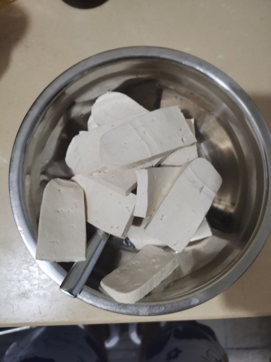
- 准备调料
- 生抽三克
- 食盐1.5克
- 白糖1.5克
- 淀粉适量
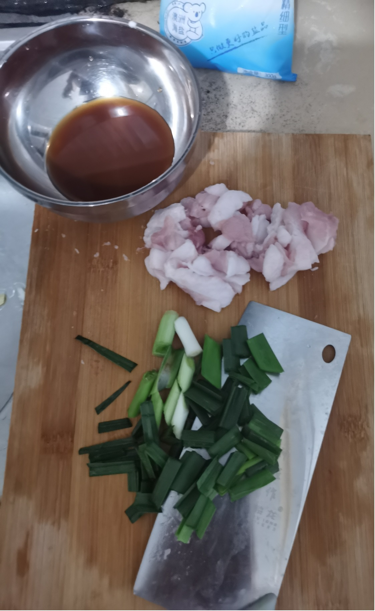
-
开始制作
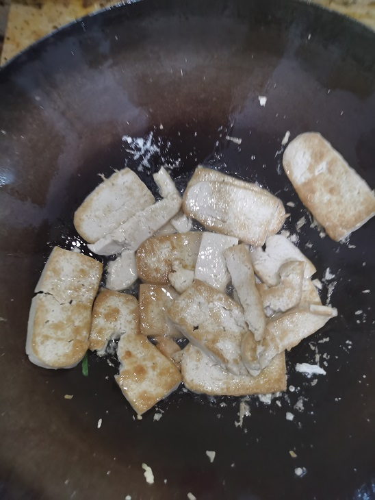-
技术难点
豆腐煎6分钟后第一次翻面，非常考验对锅的控制，不少豆腐挤成一团，如上所示；
-
-
成品展示
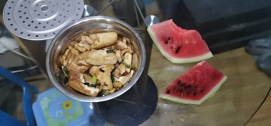
All articles in this blog are licensed under CC BY-NC-SA 4.0 unless stating additionally.
Related Articles